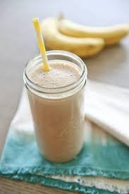

Protien Shake

Vanilla and Oatmeal Protien Shake!
A recipe for those who want something sweet and delicious while still being able to stay guilt free. this protien shake will knock your socks off
Ingredients
- ice
- 1 packet of protien oatmeal of your choice
- 1 scoop vanilla protien
- 2/3 cupwhole milk
Steps
- Grab a blender
- Add all your ingredients into it
- Blend it to your liking in thickness
- Drink up
Home